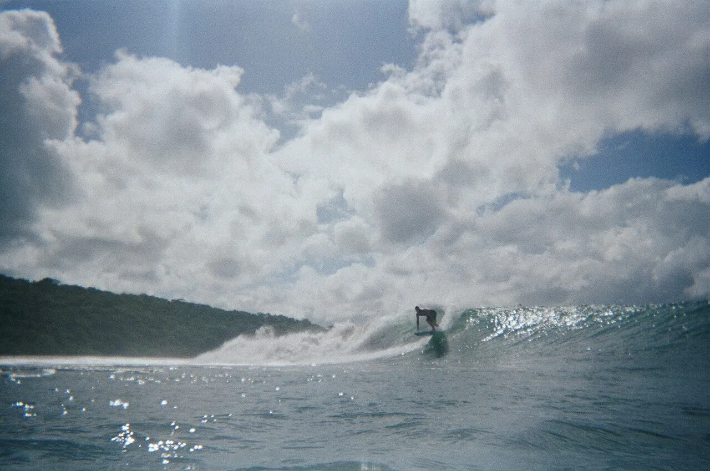

Popoyo
Rivas, Nicaragua · surf

Pic de récif régulier grâce au vent de terre du lac Nicaragua. Vagues propres presque toute l’année.
- Lieu
- Rivas, Nicaragua
- Niveau
- Intermédiaire
- Activités
- surf
- Type d'eau
- Mer / océan
- Coordonnées
- 11.46, -86.12 (position approximative du secteur)
Dangers à connaître
- Récif.
- Courant au pic.
Le conseil d'Ocean Buddy
Le vent offshore quasi constant rend les vagues propres toute la journée.
Ouvrir dans Ocean Buddy Télécharger sur l'App Store
Source : Fiche Ocean Buddy · septembre 2026 · à vérifier localement.